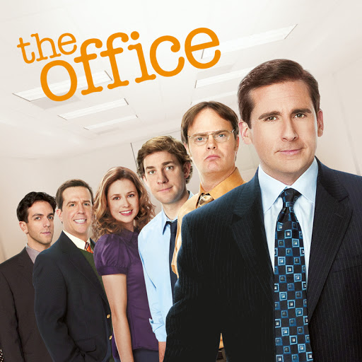
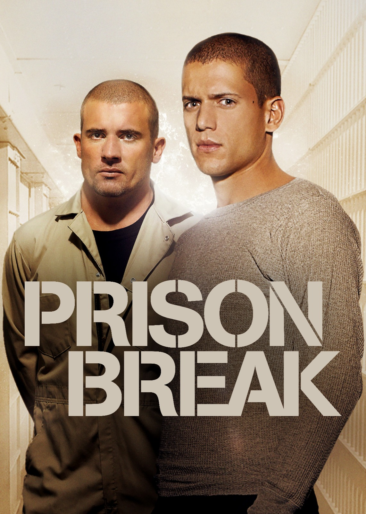

- The Office
- You
- Prison Break

The Office é uma famosa série de comédia em formato de falso documentário (mockumentary) criada por Greg Daniels. Baseada na série britânica de Ricky Gervais e Stephen Merchant, a versão americana retrata o cotidiano cômico e caótico dos funcionários da filial da empresa de papel Dunder Mifflin em Scranton,
A série Você (You) conta a história de Joe Goldberg (Penn Badgley), um gerente de livraria charmoso e inteligente. Quando ele conhece a aspirante a escritora Guinevere Beck, ele se apaixona de forma doentia. Usando a internet e as redes sociais, Joe monitora cada passo de Beck para transformar o que seria um romance em uma obsessão perigosa. Ele elimina qualquer obstáculo ou pessoa que coloque em risco o seu plano de ficar com ela

Em Prison Break, o engenheiro brilhante Michael Scofield (Wentworth Miller) planeja um assalto para ser preso na mesma penitenciária de segurança máxima que seu irmão, Lincoln Burrows (Dominic Purcell). Lincoln foi condenado à morte por um crime que não cometeu, vítima de uma grande conspiração política. Usando tatuagens com o mapa do presídio, Michael executa um plano de fuga engenhoso